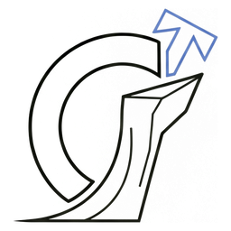

Architecture discussion
Clifft accelerator execution
A maintainable path to batch CPU, CUDA, and AMD ROCm after the 0.8 symbolic-sampler rewrite.

Unitary Foundation + accelerator partners · August 2026The 0.8 reset
Clifft removed the SVM, not just its opcodes
The VM encoded localization steps and kept several interpreters on one instruction contract.
Planning resolves coordinates, Pauli shapes, branches, and dependencies before a shot runs.
The reusable seam
The shared contract should stay semantic
CPU prepared form
descriptors, fusion, ISA choice
CUDA prepared form
layout, uploads, launch plan
ROCm prepared form
layout, uploads, launch plan
The proposal
One plan branches into three native execution paths
CPU
serial, threads, OpenMP kernels, packed batch
CUDA
NVIDIA-native device code and tuning
ROCm
AMD HIP-native device code and tuning
Execution strategy
Batch CPU and GPU should evolve together
CPU strategies
- serial shots
- shot-parallel workers
- OpenMP within wide kernels
- packed cross-shot batches
GPU strategies to measure
- one thread per shot near k = 0
- one group per shot at small k
- coefficient-parallel work at larger k
First usable slice
The first release is intentionally narrow
Must work
- Linux x86-64, one synchronous GPU
- FP64 and explicit backend selection
- sample and survivor sampling
- postselection and record output
- EXP_VAL, if the spike confirms feasibility
- unchanged CPU default and install
Defer
- leakage and loss
- sample_k and importance sampling
- exact state and probability queries
- multi-GPU and asynchronous APIs
- FP32 and automatic backend choice
- a stable public GPU bytecode
Maintainability
Correctness does not require a GPU on every PR
Action lowering, descriptor validation, forced trajectories, deterministic EXP_VAL, negative tests, and device-code compilation.
Small CUDA and ROCm runs on controlled branches; no arbitrary fork code on scarce hardware.
Statistical CPU comparisons and realistic circuits on gfx942 first; add gfx950 when hardware is available.
Runtime family, driver floor, each advertised device-code target, wheel install, and end-to-end workload checks.
Cross-backend bit-for-bit seeds are not required. Each GPU backend should be reproducible across batching and launch choices.
User experience and delivery
Explicit choices keep the Python API predictable
CPU-only
illustrative
illustrative
- No silent fallback after a user explicitly requests a GPU.
- Capability errors explain the missing operation or unsupported target.
- An execution report exposes the selected backend, strategy, device, precision, and memory plan.
- One ROCm wheel can later bundle gfx942 and gfx950 after both targets are device-validated.
- The CPU package keeps its current release cadence and easy install.
Staged delivery
De-risk first; standardize after two vendors
Owner-led spike
Real circuits on CUDA + MI300X / gfx942; compile gfx950.
Prepared boundary + CPU batch
Program retains the plan; diagnostics and one CPU resource budget.
Two-vendor correctness
FP64 correctness on gfx942; add gfx950 after device access.
Tune with evidence
Optimize one vendor at a time; keep the other correctness-complete.
Experimental packages
Publish companion wheels, then evaluate auto selection and FP32.
Discussion and next step
Start now; keep the support matrix open
- Architecture: agree on one semantic plan, native target preparation, and explicit Python backend selection.
- AMD: activate MI300X credits, confirm ROCm and driver floors and an owner, then identify a path to gfx950 hardware.
- Unitary Foundation: confirm first workloads, maintenance ownership, trusted hardware policy, and release expectations.
- NVIDIA follow-up: validate the H200/L40S-class split and answer the same runtime, CI, and ownership questions.
Proposed decision
Start phase 0 with explicit exit criteria.
Use its evidence to finalize the backend boundary, first device matrix, and sequence of implementation PRs.